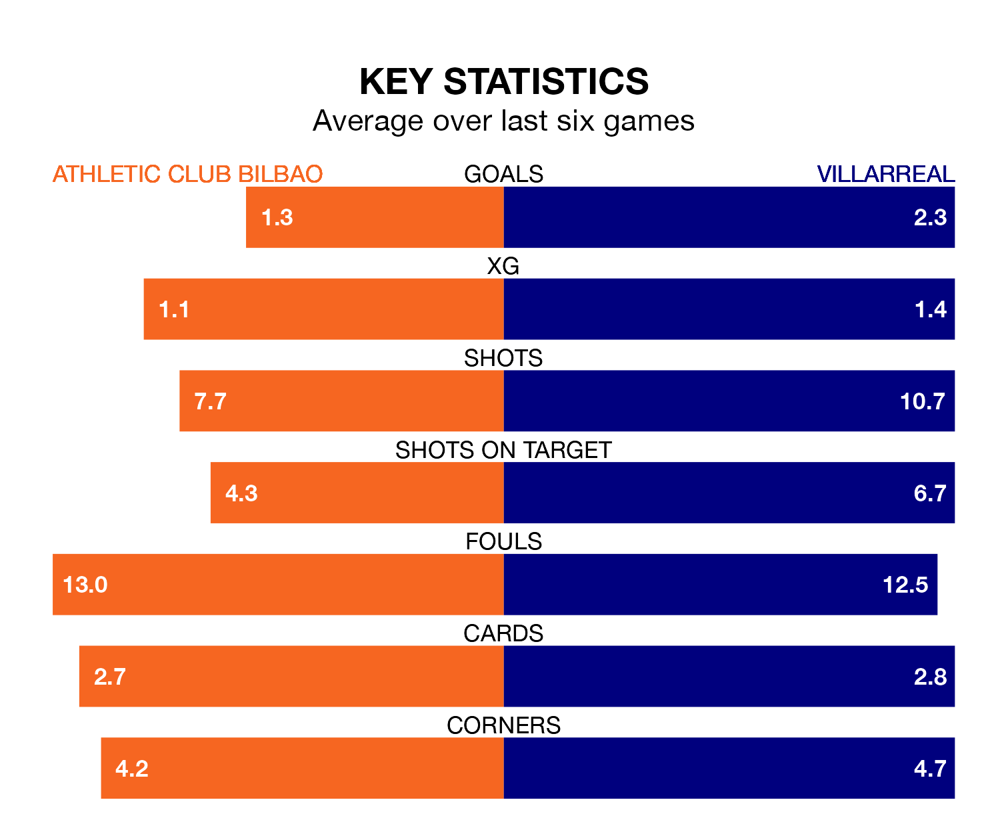

Athletic Club Bilbao are heavy favourites to keep all three points at home in Sunday's late kick-off against Villarreal.
Athletic, who sit fifth in La Liga with 30 games played, are priced at 1.6 to seal victory at San Mamés Barria.
Sitting five places and 18 points behind them in the table, Villarreal are 4.2 to win with *Betting Company*, while the draw is at 3.8.
In Unai Simón, Athletic can rely on one of the league's safest pair of hands. He has kept 15 clean sheets in his 29 appearances this season, and no 'keeper has prevented the opposition scoring more often in La Liga.
In Villarreal's net, Filip Jörgensen has four clean sheets in 29 games. He has conceded a goal every 52 minutes, 90% more often than the 100 minutes between goals for Simón Mendibil.
With 50 goals in 30 games so far this season, the home side are scoring more than average in the league with 1.7 goals per game. And they are conceding fewer than average, letting in 28 goals at a rate of 0.9 per game.
The visitors are also above average scorers, with 1.6 goals per game, compared to a league average of 1.3. They have conceded 1.8 goals per game.
In the last 10 years, Athletic and Villarreal have played each other on 21 occasions. Athletic won nine of them, Villarreal five, and they drew seven times.
On average, Athletic scored 1.3 goals and Villarreal 1.3 in those matches.
Their last meeting was on November 5, when Athletic won 3-2 away.
Athletic are in mixed form in La Liga, with three wins and a draw from their last six games.
With four wins and a draw over that period, Villarreal's form is better – they have taken 13 points from 18, compared to Athletic's 10.
Athletic's last match was on March 31, a 2-0 loss against Real Madrid.
Villarreal lost 2-1 against Atlético Madrid last time out, on April 1, with Alexander Sørloth on the scoresheet.
Updated: 14:47 (UTC), 09/04/24